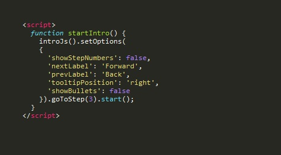

Setting Options
Intro.js has a number of options you can set using either the introJs.setOption(option, value) or introJs.setOptions(options) functions. The options you can set are as follows:
steps: For defining steps using JSONnextLabel: Text of 'next' button labelprevLabel: Text of 'prev' button labelskipLabel: Text of 'skip' button labeldoneLabel: Text of 'done' button labeltooltipPosition: Default intro box position (left, right, top, bottom)tooltipClass: Adds CSS class to all intro boxesexitOnEsc: Exit introduction when pressing Escape button, set true or falseexitOnOverlayClick: Exit introduction when clicking on overlay layer, set true or falseshowStepNumbers: Show the red-circled step number, set true or falsekeyboardNavigation: Navigate with keyboard, set true or falseshowButtons: Show the navigation buttons, set true or falseshowBullets: Show the introduction bullets, set true or falsescrollToElement: Auto scrolls to the highlighted element if it's off user's screen, set true or false
Set Single Option
To set one option you can use the introJs.setOption() function. Say we have an intro box, but would not like to show the navigation buttons. We can include the introJs.setOption() function with the showButtons option set to the value false.
introJs.setOption('showButtons', false).start()
Set Multiple Options
To set multiple options in one function you can use introJs.setOptions(). As an example I will set the intro box to have a new 'skip' label and to not show the number in the corner:
introJs().setOptions({ 'skipLabel': 'Finish', 'showStepNumbers': false }).start()
This is a fine way to do it if you're only setting a couple of options, but if you plan to set many options for multiple steps you may want to write your own function to call. The following piece of code sets all of the intro boxes after step 2 to have the same options set. Click the button below to see it in action!
